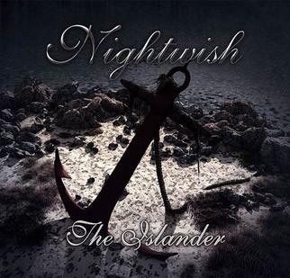
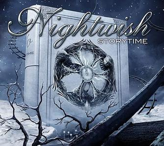

Singles
The Carpenter
Track list:
1. "The Carpenter" Nightwish 5:552. "Red Light In My Eyes, Part II" Children of Bodom 3:50
3. "Only Dust Moves..." Thy Serpent 7:09
Sacrament of Wilderness
Track list:
Sacrament of WildernessBurning Flames' Embrace (by Eternal Tears of Sorrow)
The Crow and the Warrior (by Darkwoods My Betrothed)
Sleeping Sun
Track list:
1. "Sleeping Sun" Tuomas Holopainen 4:042. "Walking in the Air" Howard Blake 5:31
3. "Swanheart" Holopainen 4:46
4. "Angels Fall First" Holopainen 5:34
Deep Silent Complete
Track list:
1. "Deep Silent Complete" 3:572. "Sleepwalker" (Previously Unreleased) 3:06
3. "Sleepwalker" (Simple Version) 2:55
Ever Dream
Track list:
1. "Ever Dream"2. "The Phantom of the Opera"
3. "The Wayfarer"
Bless the Child
Track list:
1. "Bless the Child" (Edit)2. "Bless the Child"
3. "Lagoon"
Nemo
Track list:
CD11. "Nemo" (w/ fade out) 4:28
2. "Planet Hell" 4:42
3. "White Night Fantasy" (non-album bonus track) 4:05
4. "Nemo" (orchestral version) 4:37
5. "Enhanced Part" (studio report / photo gallery) 4:05
CD2
1. "Nemo" (w/ cold end) 4:36
2. "Live to Tell the Tale" (exclusive bonus track) 5:02
3. "Nemo" (orchestral version) 4:37
4. "Nemo promotional video" (m-peg) 4:05
1. "Nemo" (w/ cold end) 4:36
2. "Live to Tell the Tale" (exclusive bonus track) 5:02
3. "Nemo" (orchestral version) 4:37
4. "Nemo promotional video" (m-peg) 4:05
Wish I Had an Angel
Track list:
1. "Wish I Had An Angel (Album Version)" 4:082. "Ghost Love Score (Orchestral Score)" 10:47
3. "Where Were You Last Night" 3:52
4. "Wish I Had An Angel (Demo Version)" 4:08
Kuolema tekee taiteilijan
Track list:
1. "Kuolema tekee taiteilijan"2. "Symphony of Destruction" (live Megadeth Cover)
3. "Creek Mary's Blood" (Orchestral Score)
4. "Where Were You Last Night"
5. "Wish I Had an Angel" (Demo)
6. "Ghost Love Score" (Orchestral version)
The Siren
Track list:
1. The Siren (edited)2. The Siren (album version)
3. The Siren (live)
4. Kuolema tekee taiteilijan (live)
Eva
Track list:
1. "Eva" 4:25Amanarth
Track list:
1. "Amaranth" Tuomas Holopainen 3:572. "Reach" ("Amaranth" demo version, sung by Marco Hietala) 3:57
3. "Eva" (Orchestral Version) 4:28
4. "While Your Lips Are Still Red" (Sung by Hietala) 4:22
Erämaan viimeinen
Track list:
1. "Erämaan Viimeinen" (feat. Jonsu) 5:112. "Erämaan Viimeinen" (Instrumental) 5:40
3. "Escapist" (Metal Hammer Promo Single only) 4:59
4. "Escapist" (Instrumental, Metal Hammer Promo Single only) 4:57
Bye Bye Beautiful
Track list:
1. "Bye Bye Beautiful" 4:192. "The Poet and the Pendulum" (original demo version) 13:43
3. "Escapist" Holopainen 5:01
4. "Bye Bye Beautiful" (DJ Orkidea Remix) 12:07
The Islander
Track list:
1. "The Islander" (radio version) 3:572. "The Islander" (full-length version) 4:58
3. "Escapist" (instrumental version) 4:57
4. "Meadows of Heaven" (orchestral version) 7:10

Storytime
Track list:
1. "Storytime" (radio edit) 3:592. "Storytime" (album version) 5:28
3. "Storytime" (instrumental version) 5:28

The Crow, the Owl and the Dove
Track list:
1. "The Crow, the Owl and the Dove (Radio edit)" 3:462. "The Heart Asks Pleasure First" 4:20
3. "The Crow, the Owl and the Dove (Album version)" 4:10
4. "The Crow, the Owl and the Dove (Instrumental version)" 4:10
5. "The Heart Asks Pleasure First (Instrumental version)" 4:20
Élan
Track list:
1. "Élan" 4:482. "Sagan" (Single-exclusive bonus track[4]) 4:45
3. "Élan" (Alternative version) 4:25
4. "Élan" (Radio version) 4:01
Endless Forms Most Beautiful
Track list:
1. "Endless Forms Most Beautiful" (Album version) 5:082. "Sagan" (Instrumental) 4:45
3. "Endless Forms Most Beautiful" (Alternative version) 5:08
4. "Endless Forms Most Beautiful" (Radio version) 4:12
My Walden
Track list:
1. "My Walden"2. "Ghost River (Live At Wacken 2013)"
3. "Ghost Love Score (Live At Wacken 2013)"